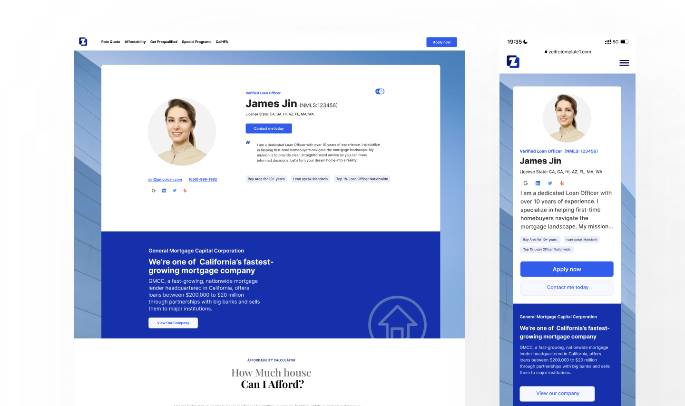
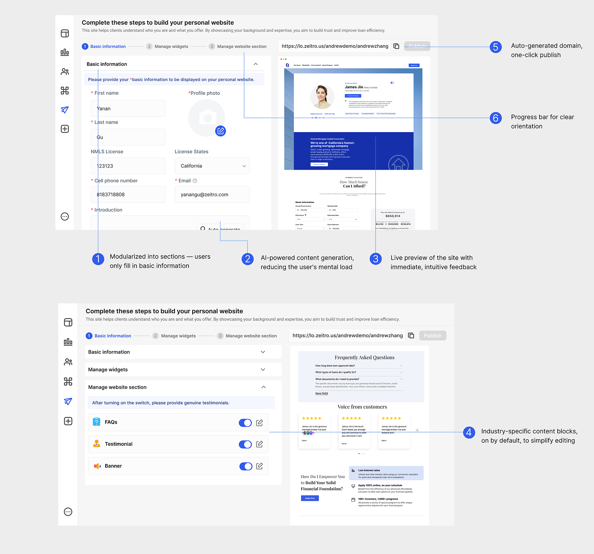

A no-code website builder for mortgage loan officers, inside a Silicon Valley SaaS. This is the project where every decision had to start with a question I could answer: why this, and not something else? The work wasn't drawing screens. It was building the reasoning that justified each one.
My role: user research, problem definition, and the full design system of decisions. I owned the "why" behind the product.

The output: a personal website a loan officer can stand up themselves — desktop and mobile, generated from a few fields.
Understanding before designing
Loan officers in North America skew older — many are 50+, deeply experienced, trusted in their communities, but left behind by digital self-promotion. Existing website builders assume a level of design literacy they don't have. Before I designed anything, I ran the research myself — user interviews and behavioral data — to understand not just what they needed, but how they'd actually behave inside a builder.
Three findings reshaped the entire product:
That last number is the one that mattered most. If 90% of users only want to change words and photos — not layouts — then a flexible editor isn't a feature. It's an obstacle. The data told me to take power away, not add it.
Whose problem am I really solving?
A B2B designer's instinct is to design for the buyer — the loan officer. But this product only works if it also serves the people the loan officer is trying to reach. I defined the product around two users at once, and held both in view through every decision.
This framing changed what "good" meant. The builder wasn't there to give loan officers creative freedom — it was there to reliably produce something a nervous first-time homebuyer would trust. Designing for the second user is what kept the first user's product honest.
Every decision had a reason
Once the research set the direction — strip away choice, protect trust — each feature became an answer to a specific moment of hesitation. None of these were "nice to have." Each one removed a reason a 50-year-old might give up.
Six decisions, none of them standalone features — each one a removed reason to give up, all converging on a single goal.
01
Modular content
Structure is pre-built. The user fills in information and never decides on layout — because 90% didn't want to.
02
AI-drafted content
AI writes the first introduction and FAQ. Kills the blank-page paralysis that stalls non-writers.
03
Live preview
Every edit appears instantly. No "save and check" gap — the feedback loop is immediate and reassuring.
04
Industry defaults on
Mortgage-specific FAQs and CTAs are pre-filled and toggled on. Subtract to customize, don't build from nothing.
05
Auto domain
A personal URL is generated automatically. One-click publish — no hosting decisions to get lost in.
06
Progress bar
A three-step indicator. The user always knows where they are and how close they are to done.

The backend in detail: a three-step flow (Basic information → Manage widgets → Manage website section), annotated with the six decisions above. Everything is calibrated so that filling in, not building, is the entire experience.
For this user, the best feature was the one I chose not to build. Restraint was the design.
The hardest part of this project wasn't the interface — it was earning the right to design it. Understanding NMLS licensing rules, state-by-state requirements, what a loan officer's professional identity actually rests on, what makes a homebuyer trust a stranger online. None of that is visible in the final screens, but all of it is underneath them.
That's what I took away: in a complex domain, the quality of the design is capped by the quality of your understanding. The measure of success was never "does the feature work." It was "can someone who has never built a website finish one — and feel proud of it — in under 30 minutes." Every decision laddered back to that.
<30m
To build & publish
>80%
First-publish success
>90%
Edit completion rate
<5%
Operation error rate